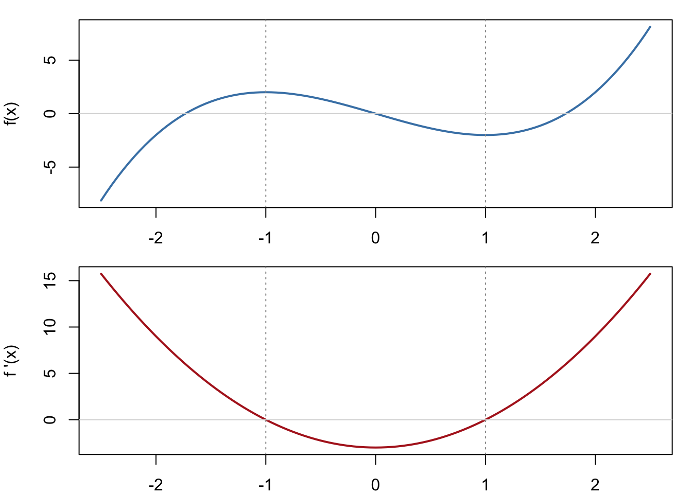
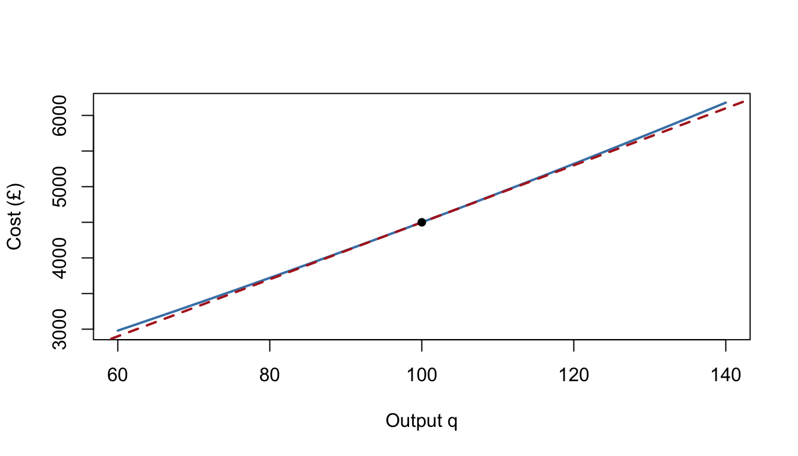

7 Differentiation
Differentiation measures how fast things change. For a Management Science student that means marginal cost, marginal revenue, growth rates, and — above all — optimisation: finding the price, output or order size that makes profit largest or cost smallest. This is the single most-used piece of calculus in your degree, so this chapter is the longest in the course, with extra worked examples on the differentiation rules, where most students wobble.
Take your time here. The rules themselves are short; fluency comes from seeing them applied — and combined — many times.
Why this matters: "Marginal" is the most important word in economics, and it means "derivative". Marginal cost is \(C'(q)\); marginal revenue is \(R'(q)\); profit is maximised where the two are equal — which is exactly the condition \(P'(q) = 0\). Learn differentiation well and half of first-year microeconomics becomes familiar territory.
7.1 What is a derivative?
7.1.1 Key idea
The derivative \(f'(x)\) (also written \(\dfrac{dy}{dx}\)) is the gradient of the curve \(y = f(x)\) at the point \(x\) — the gradient of the tangent line there. Formally it's a limit of straight-line gradients (Chapter 4) over shrinking intervals:
\[f'(x) = \lim_{h \to 0} \frac{f(x+h) - f(x)}{h}.\]
The fraction is the gradient of a chord from \(x\) to \(x + h\); as \(h\) shrinks, the chord swings into the tangent. Three readings of the same object:
- geometric: gradient of the tangent line;
- dynamic: instantaneous rate of change (with units — pounds per unit, customers per month);
- algebraic: the limit above.
The derivative is itself a function — the gradient function — whose graph you should be able to sketch from the original: where \(f\) climbs, \(f' > 0\); where \(f\) falls, \(f' < 0\); at the top and bottom of hills, \(f' = 0\).

Figure 7.1: A curve (top) and its gradient function (bottom): peaks and troughs of f become zeros of f'.
7.1.2 Worked examples
Example (simple). Interpret: a firm's cost function satisfies \(C'(150) = 32\), with \(C\) in pounds and \(q\) in units.
At the current output of 150 units, cost is rising at £32 per unit — producing one more unit will cost roughly an extra £32. This is the marginal cost at \(q = 150\).
Example (moderate). Differentiate \(f(x) = x^2\) from first principles.
\[f'(x) = \lim_{h \to 0} \frac{(x+h)^2 - x^2}{h} = \lim_{h \to 0} \frac{2xh + h^2}{h} = \lim_{h \to 0} (2x + h) = 2x.\]
Notice the crucial move: cancel \(h\) first, then let \(h \to 0\). (Setting \(h = 0\) immediately gives the meaningless \(\tfrac{0}{0}\).)
Example (challenging). Sketch the gradient function of a curve which rises steeply, levels off to a maximum at \(x = 2\), falls to a minimum at \(x = 5\), then rises gently.
The gradient function starts large and positive, decreases through zero at \(x = 2\), goes negative (most negative somewhere between 2 and 5), returns to zero at \(x = 5\), then is small and positive. Every feature of \(f\) becomes a different feature of \(f'\) — turning points become roots.
7.1.3 Practice exercises
- Differentiate \(f(x) = x^2 + 3x\) from first principles.
- A demand model satisfies \(q'(4) = -30\), where \(q\) is weekly sales and \(p\) is price in pounds. Interpret this sentence for a manager.
- A curve has a single maximum at \(x = 1\) and no other stationary points. Describe the sign of \(f'(x)\) for \(x < 1\) and \(x > 1\).
Common mistakes:
- The derivative at a point is a number; the derivative in general is a function. Keep the two uses straight.
- \(f'(a) = 0\) does not mean \(f(a) = 0\): the curve is flat there, not necessarily on the axis.
7.2 Standard derivatives
7.2.1 Key idea
The building blocks (each verifiable from first principles, but from now on quoted):
\[\frac{d}{dx}\big(x^n\big) = nx^{n-1} \text{ (any rational } n\text{)}, \qquad \frac{d}{dx}\big(e^x\big) = e^x, \qquad \frac{d}{dx}\big(\ln x\big) = \frac{1}{x},\]
together with two structural rules: constants multiply through, and sums differentiate term by term:
\[\frac{d}{dx}\big(a f(x) + b g(x)\big) = a f'(x) + b g'(x).\]
The power rule covers far more than it seems — roots and reciprocals are powers in disguise: \(\sqrt{x} = x^{1/2}\), \(\tfrac{1}{x^2} = x^{-2}\). Rewrite first, differentiate second.
7.2.2 Worked examples
Example (simple). Differentiate \(y = 4x^3 - 2x + 7\).
\(\dfrac{dy}{dx} = 12x^2 - 2\). (The constant 7 vanishes — constants don't change.)
Example (moderate). Differentiate \(y = 6\sqrt{x} + \dfrac{3}{x^2}\).
Rewrite: \(y = 6x^{1/2} + 3x^{-2}\). Then
\[\frac{dy}{dx} = 3x^{-1/2} - 6x^{-3} = \frac{3}{\sqrt{x}} - \frac{6}{x^3}.\]
Example (moderate). Differentiate \(y = \dfrac{2x^3 - 5x}{x}\).
Don't reach for heavy machinery — simplify first: \(y = 2x^2 - 5\), so \(\dfrac{dy}{dx} = 4x\). A recurring theme in this chapter: thirty seconds of algebra often saves five minutes of calculus.
Example (challenging). A firm's total cost is \(C(q) = 200 + 15q - 0.6q^2 + 0.01q^3\) (in £). Find the marginal cost function and evaluate it at \(q = 10\) and \(q = 50\). What is the cost structure doing?
\[C'(q) = 15 - 1.2q + 0.03q^2.\]
\(C'(10) = 15 - 12 + 3 = £6\) per unit; \(C'(50) = 15 - 60 + 75 = £30\) per unit. Marginal cost falls at low output (economies of scale as the firm gets going) and rises at high output (capacity strain) — the classic U-shaped marginal cost curve, produced by a humble cubic.
7.2.3 Practice exercises
- Differentiate \(y = 5x^4 - 3x^2 + 2\).
- Differentiate \(y = 6\sqrt{x} - \dfrac{4}{x}\).
- Differentiate \(y = \dfrac{x^3 + 4x}{x^2}\) (simplify first).
- Differentiate \(y = 2e^x + \ln x - x\).
- For \(C(q) = 100 + 8q + 0.05q^2\), find and interpret \(C'(40)\).
Common mistakes:
- \(\dfrac{d}{dx}\left(\dfrac{1}{x^2}\right)\): rewrite as \(x^{-2}\) first; the derivative is \(-2x^{-3}\), and the minus sign is compulsory.
- The power rule needs the power to decrease: \(\tfrac{d}{dx}(x^{1/2}) = \tfrac{1}{2}x^{-1/2}\), not \(\tfrac{1}{2}x^{3/2}\).
- \(\dfrac{d}{dx}(e^x) = e^x\), but \(\dfrac{d}{dx}(2^x) \ne 2^x\) — the "derivative equals itself" property is what makes \(e\) special (for other bases, wait for the chain rule).
Self-check: standard derivatives
Ten quick-fire derivatives — half of them need a rewrite (roots and reciprocals as powers) before the rules will bite. Spot which.
Q1. \(y = 7x^3\). Then \(\dfrac{dy}{dx} = kx^2\), where \(k =\) .
Q2. Which of the following is \(\dfrac{dy}{dx}\) for \(y = x^5 - 4x^2 + 9\)?
- \(5x^4 - 8x + 9\)
- \(5x^4 - 8x\)
- \(x^4 - 4x\)
- \(5x^4 - 4x\)
Answer:
Q3. \(y = 6\sqrt{x}\). Then \(\dfrac{dy}{dx} = \dfrac{k}{\sqrt{x}}\), where \(k =\) .
Q4. Which of the following is \(\dfrac{dy}{dx}\) for \(y = \dfrac{1}{x^2}\)?
- \(\dfrac{2}{x^3}\)
- \(2x\)
- \(-\dfrac{2}{x^3}\)
- \(-\dfrac{2}{x}\)
Answer:
Q5. \(y = \dfrac{4}{x}\). Then \(\dfrac{dy}{dx} = \dfrac{k}{x^2}\), where \(k =\) .
Q6. Which of the following is \(\dfrac{dy}{dx}\) for \(y = 2e^x + 5\)?
- \(2e^x\)
- \(2e^x + 5\)
- \(2x\,e^{x-1}\)
- \(e^x\)
Answer:
Q7. \(y = 3\ln x\). Then \(\dfrac{dy}{dx} = \dfrac{k}{x}\), where \(k =\) .
Q8. Simplify first: for \(y = \dfrac{x^3 + 4x}{x}\), the gradient at \(x = 2\) is .
Q9. Which of the following is \(\dfrac{dy}{dx}\) for \(y = x\sqrt{x}\)?
- \(\sqrt{x}\)
- \(\dfrac{1}{2\sqrt{x}}\)
- \(\dfrac{3}{2}x^{5/2}\)
- \(\dfrac{3}{2}\sqrt{x}\)
Answer:
Q10. A firm's cost function is \(C(q) = 200 + 6q + 0.04q^2\) (in £). The marginal cost at \(q = 50\) is £ per unit.
Q1. \(k = 21\): multiply by the power, drop the power by one — \(7 \times 3 = 21\).
Q2. (B). The constant 9 differentiates to zero — option (A), which keeps it, is the most tempting slip. (C) lowers the power without multiplying by it first.
Q3. \(k = 3\): rewrite \(6\sqrt{x} = 6x^{1/2}\), so \(y' = 3x^{-1/2}\). The power must decrease, to \(-\tfrac12\) — writing \(\tfrac{3}{2}x^{3/2}\) (power increased) is the standard trap.
Q4. (C). Rewrite \(y = x^{-2}\), so \(y' = -2x^{-3} = -\dfrac{2}{x^3}\). Trap (A) drops the compulsory minus sign; trap (B) differentiates \(x^2\) and forgets the reciprocal entirely.
Q5. \(k = -4\): \(y = 4x^{-1}\), so \(y' = -4x^{-2}\). Same trap as Q4 — the minus sign comes from the power \(-1\).
Q6. (A). \(e^x\) is its own derivative, and the constant 5 vanishes. Trap (C) applies the power rule to \(e^x\) — but the variable lives in the exponent, so the power rule does not apply.
Q7. \(k = 3\): the derivative of \(\ln x\) is \(\tfrac{1}{x}\), and the constant multiple 3 carries through.
Q8. 4. Simplify first: \(y = x^2 + 4\), so \(y' = 2x\) and \(y'(2) = 4\). (The quotient rule also gets there — five times more slowly.)
Q9. (D). \(x\sqrt{x} = x^{3/2}\), so \(y' = \tfrac{3}{2}x^{1/2} = \tfrac{3}{2}\sqrt{x}\). Trap (C) increases the power; trap (B) differentiates only the \(\sqrt{x}\) factor.
Q10. £10 per unit: \(C'(q) = 6 + 0.08q\), so \(C'(50) = 6 + 4 = 10\) — the 51st unit costs roughly £10 to make.
7.3 The chain rule
7.3.1 Key idea
The chain rule differentiates a function of a function. If \(y = f(u)\) where \(u = g(x)\), then
\[\frac{dy}{dx} = \frac{dy}{du} \times \frac{du}{dx}.\]
In words: differentiate the outside (leaving the inside alone), then multiply by the derivative of the inside. Three patterns cover nearly everything:
\[\frac{d}{dx}\big(g(x)\big)^n = n\big(g(x)\big)^{n-1} g'(x), \qquad \frac{d}{dx}\,e^{g(x)} = g'(x)\,e^{g(x)}, \qquad \frac{d}{dx}\ln\big(g(x)\big) = \frac{g'(x)}{g(x)}.\]
7.3.2 Worked examples
Example (simple). Differentiate \(y = (3x + 1)^7\).
Outside: power 7. Inside: \(3x + 1\), derivative 3.
\[\frac{dy}{dx} = 7(3x+1)^6 \times 3 = 21(3x+1)^6.\]
Example (simple). Differentiate \(y = e^{-0.2t}\).
\[\frac{dy}{dt} = -0.2\,e^{-0.2t}.\]
(The workhorse of decay models: the derivative of \(e^{kt}\) is always \(k e^{kt}\).)
Example (moderate). Differentiate \(y = \ln(5x - 2)\).
\[\frac{dy}{dx} = \frac{5}{5x - 2}.\]
Example (moderate). Differentiate \(y = \sqrt{x^2 + 1}\).
Rewrite: \(y = (x^2 + 1)^{1/2}\). Then
\[\frac{dy}{dx} = \frac{1}{2}(x^2+1)^{-1/2} \times 2x = \frac{x}{\sqrt{x^2+1}}.\]
Example (moderate). Differentiate \(y = e^{x^2}\).
\[\frac{dy}{dx} = 2x\,e^{x^2}.\]
(Note carefully: this is not \(e^{2x}\) — the outside function is untouched; the inside's derivative multiplies it.)
Example (challenging). Differentiate \(y = \dfrac{1}{(3x - 1)^2}\) and \(y = \big(2x^2 - 3x + 1\big)^4\).
First: rewrite as \(y = (3x-1)^{-2}\), so
\[\frac{dy}{dx} = -2(3x-1)^{-3} \times 3 = \frac{-6}{(3x-1)^3}.\]
Second:
\[\frac{dy}{dx} = 4\big(2x^2 - 3x + 1\big)^3 \times (4x - 3).\]
The inside can be as complicated as it likes — its derivative just tags along as a factor.
Example (challenging — decaying demand). Sales of a fading product are \(S(t) = 500\,e^{-0.1t}\) units per month, \(t\) months after launch of a rival. How fast are sales falling at \(t = 10\)?
\[S'(t) = -50\,e^{-0.1t}, \qquad S'(10) = -50e^{-1} \approx -18.4.\]
Ten months in, sales are falling at about 18 units per month — and, characteristically for exponential decay, the rate of loss is itself shrinking: \(S'\) is always exactly \(-0.1\) times the current sales level.
7.3.3 Practice exercises
- Differentiate \(y = (2x - 5)^6\).
- Differentiate \(y = e^{3x + 1}\).
- Differentiate \(y = \ln(x^2 + 4)\).
- Differentiate \(y = \sqrt{4x - 1}\).
- A machine's value is \(V(t) = 20000\,e^{-0.15t}\) pounds after \(t\) years. Find \(V'(4)\) and interpret it.
Common mistakes:
- Forgetting to multiply by the inside's derivative — writing \(\tfrac{d}{dx}(3x+1)^7 = 7(3x+1)^6\) and stopping. Ask every time: "what's the derivative of the inside?"
- Differentiating the inside inside: \(\tfrac{d}{dx}(3x+1)^7\) is not \(7(3)^6\). The inside stays intact; only its derivative appears as a factor.
- \(\tfrac{d}{dx}\,e^{x^2} = 2xe^{x^2}\), never \(e^{2x}\): don't touch the exponent's contents when differentiating the outside.
Self-check: the chain rule
Eight derivatives across the three patterns — but stay alert: two of these need no chain rule at all.
Q1. \(y = (4x + 1)^5\). Then \(\dfrac{dy}{dx} = k(4x+1)^4\), where \(k =\) .
Q2. \(y = e^{-0.3t}\). Then \(\dfrac{dy}{dt} = k\,e^{-0.3t}\), where \(k =\) .
Q3. Which of the following is \(\dfrac{dy}{dx}\) for \(y = \ln(3x + 2)\)?
- \(\dfrac{3}{3x+2}\)
- \(\dfrac{1}{3x+2}\)
- \(-\dfrac{3}{(3x+2)^2}\)
- \(\dfrac{1}{x}\)
Answer:
Q4. \(y = e^3\). Then \(\dfrac{dy}{dx} =\) .
Q5. Which of the following is \(\dfrac{dy}{dx}\) for \(y = \sqrt{2x + 3}\)?
- \(\dfrac{1}{2\sqrt{2x+3}}\)
- \((2x+3)^{3/2}\)
- \(\dfrac{1}{\sqrt{2x+3}}\)
- \(\dfrac{1}{2x+3}\)
Answer:
Q6. Which of the following is \(\dfrac{dy}{dx}\) for \(y = e^{x^2}\)?
- \(e^{2x}\)
- \(e^{x^2}\)
- \(x^2 e^{x^2}\)
- \(2x\,e^{x^2}\)
Answer:
Q7. \(y = 6x - 1\). Then \(\dfrac{dy}{dx} =\) .
Q8. A machine's value is \(V(t) = 12000\,e^{-0.2t}\) pounds after \(t\) years. Then \(V'(t) = k\,e^{-0.2t}\), where \(k =\) , so at every \(t\) the machine's value is .
Q1. \(k = 20\): outside gives \(5(4x+1)^4\), inside contributes the factor 4.
Q2. \(k = -0.3\): the derivative of \(e^{kt}\) is always \(k\,e^{kt}\) — the workhorse fact of decay models.
Q3. (A). Pattern \(\dfrac{g'}{g}\) with \(g = 3x + 2\). Trap (B) forgets the inner derivative 3; trap (D) is the derivative of \(\ln(3x)\) — the \(+2\) changes everything.
Q4. 0. \(e^3 \approx 20.09\) is a constant — no \(x\), no chain rule, no derivative. Reaching for machinery here is exactly the reflex this question tests.
Q5. (C). Rewrite \((2x+3)^{1/2}\): \(\;y' = \tfrac{1}{2}(2x+3)^{-1/2} \times 2 = \dfrac{1}{\sqrt{2x+3}}\) — the \(\tfrac12\) and the inner 2 cancel. Trap (A) forgets the inner derivative; trap (B) increases the power.
Q6. (D). Differentiate the outside leaving the inside alone, then multiply by the inside's derivative \(2x\). Trap (A), \(e^{2x}\), is the classic error — never touch the exponent's contents.
Q7. 6. A straight line: no chain rule needed. (Using one anyway, with inside \(x\), gives the same answer — but recognising when the rule is unnecessary is part of fluency.)
Q8. \(k = -2400\) and falling: \(V'(t) = 12000 \times (-0.2)\,e^{-0.2t}\), negative for every \(t\). For scale, \(V'(5) = -2400e^{-1} \approx -£883\) per year.
7.4 The product rule
7.4.1 Key idea
For a product of two functions,
\[\frac{d}{dx}\big(u v\big) = u'v + uv'.\]
In words: differentiate the first times the second as-is, plus the first as-is times the derivative of the second. Symmetric, so the order you take them in doesn't matter.
7.4.2 Worked examples
Example (simple). Differentiate \(y = x^2 e^x\).
With \(u = x^2\), \(v = e^x\):
\[\frac{dy}{dx} = 2x\,e^x + x^2 e^x = x e^x (2 + x).\]
Factorising the answer (as here) is a habit worth forming — it makes finding stationary points trivial later.
Example (moderate). Differentiate \(y = x \ln x\).
\[\frac{dy}{dx} = 1 \cdot \ln x + x \cdot \frac{1}{x} = \ln x + 1.\]
Example (moderate). Differentiate \(y = e^{2x} \ln x\).
Now the first factor needs a chain rule of its own (\(u' = 2e^{2x}\)):
\[\frac{dy}{dx} = 2e^{2x}\ln x + \frac{e^{2x}}{x} = e^{2x}\left(2\ln x + \frac{1}{x}\right).\]
Example (challenging). Differentiate \(y = x^3(2x - 1)^4\) and factorise fully.
\(u = x^3\), \(u' = 3x^2\); \(v = (2x-1)^4\), \(v' = 8(2x-1)^3\) (chain rule inside the product rule):
\[\frac{dy}{dx} = 3x^2(2x-1)^4 + 8x^3(2x-1)^3.\]
Both terms share \(x^2(2x-1)^3\) — take it out:
\[\frac{dy}{dx} = x^2(2x-1)^3\big[3(2x-1) + 8x\big] = x^2(2x-1)^3(14x - 3).\]
From the factorised form you can read off at a glance where the gradient is zero: \(x = 0\), \(x = \tfrac12\), \(x = \tfrac{3}{14}\). The unfactorised version hides all three.
7.4.3 Practice exercises
- Differentiate \(y = x^2 \ln x\) and factorise.
- Differentiate \(y = (x^2 + 1)e^x\) and show the answer is \(e^x(x+1)^2\).
- Differentiate \(y = x\sqrt{2x + 1}\) and write the answer as a single fraction.
- Differentiate \(y = t e^{-0.5t}\) (a common "rise then fade" sales-response shape) and find where its gradient is zero.
Common mistakes:
- The derivative of a product is not the product of the derivatives: \(\tfrac{d}{dx}(x^2 e^x) \ne 2x\,e^x\). Two terms, always.
- Once you've used the product rule, the job may not be done — each factor may need its own chain rule (\(v = (2x-1)^4\) above).
- Leaving answers unfactorised. Not wrong, but it hides the structure you almost always need next.
Self-check: the product rule
Six product-rule derivatives — two of them hide a chain rule inside. All correct options are fully factorised.
Q1. Which of the following is \(f'(x)\) for \(f(x) = x^3 e^x\)?
- \(x^2 e^x(3 + x)\)
- \(3x^2 e^x\)
- \(x^3 e^x\)
- \(3x^2 + e^x\)
Answer:
Q2. Which of the following is \(f'(x)\) for \(f(x) = x^3 \ln x\)?
- \(3x^2 \ln x\)
- \(x^2(3\ln x + 1)\)
- \(3x\)
- \(3x^2 + \dfrac{1}{x}\)
Answer:
Q3. Which of the following is \(f'(x)\) for \(f(x) = x\,e^{4x}\)?
- \(e^{4x}(1 + x)\)
- \(4e^{4x}\)
- \(4x\,e^{4x}\)
- \(e^{4x}(1 + 4x)\)
Answer:
Q4. Which of the following is the fully factorised \(f'(x)\) for \(f(x) = x^2(2x+1)^3\)?
- \(x(2x+1)^2(7x+2)\)
- \(12x(2x+1)^2\)
- \(2x(2x+1)^2(5x+1)\)
- \(2x(2x+1)^3\)
Answer:
Q5. For \(f(x) = x\,e^{-4x}\), the gradient is zero at \(x =\) , and this stationary point is a .
Q6. The derivative of \(f(x) = x^2 e^x\) factorises as \(f'(x) = x\,e^x(x + 2)\). The number of values of \(x\) solving \(f'(x) = 0\) is .
Q1. (A). \(f' = 3x^2 e^x + x^3 e^x = x^2 e^x(3 + x)\). Trap (B) is the product of the derivatives — two terms, always. Trap (D) is the sum of the derivatives, the other classic.
Q2. (B). \(f' = 3x^2 \ln x + x^3 \cdot \tfrac{1}{x} = 3x^2\ln x + x^2 = x^2(3\ln x + 1)\). Trap (C) is \(3x^2 \times \tfrac{1}{x}\) — derivatives multiplied.
Q3. (D). Inner chain: \(\tfrac{d}{dx}e^{4x} = 4e^{4x}\), so \(f' = e^{4x} + 4x\,e^{4x} = e^{4x}(1 + 4x)\). Trap (A) forgets the inner 4 — the half-finished chain rule buried inside a product rule.
Q4. (C). \(f' = 2x(2x+1)^3 + x^2 \cdot 6(2x+1)^2 = 2x(2x+1)^2\big[(2x+1) + 3x\big] = 2x(2x+1)^2(5x+1)\). Trap (A) forgets the inner 2 in \(v'\); (B) multiplies the derivatives. Quick check: the factorised form puts stationary points at \(x = 0\), \(-\tfrac12\), \(-\tfrac15\) — three roots, as a quartic's derivative can have.
Q5. \(x = 0.25\), a maximum: \(f'(x) = e^{-4x}(1 - 4x)\), zero at \(x = \tfrac14\), positive before and negative after. The factorised form makes the sign analysis one glance.
Q6. 2. Since \(e^x > 0\) for every \(x\), only \(x = 0\) and \(x = -2\) qualify. The trap is counting "\(e^x = 0\)" as a third solution — the exponential factor never vanishes, which is exactly why factorised derivatives are so easy to solve.
7.5 The quotient rule
7.5.1 Key idea
For a quotient,
\[\frac{d}{dx}\left(\frac{u}{v}\right) = \frac{u'v - uv'}{v^2}.\]
Unlike the product rule this is not symmetric — the minus sign means order matters. Many quotients can be dodged: \(\tfrac{x^3+4x}{x^2}\) simplifies first; \(\tfrac{1}{(3x-1)^2}\) is a chain rule on \((3x-1)^{-2}\). Use the quotient rule when the variable genuinely lives in both storeys.
7.5.2 Worked examples
Example (simple). Differentiate \(y = \dfrac{2x + 1}{x - 3}\).
\(u = 2x+1\), \(v = x - 3\):
\[\frac{dy}{dx} = \frac{2(x-3) - (2x+1)(1)}{(x-3)^2} = \frac{-7}{(x-3)^2}.\]
Always negative — the curve falls on both branches, matching the sketching work of Section 3.3.
Example (moderate). Differentiate \(y = \dfrac{x^2}{x^2 + 1}\).
\[\frac{dy}{dx} = \frac{2x(x^2+1) - x^2(2x)}{(x^2+1)^2} = \frac{2x}{(x^2+1)^2}.\]
Note how much cancels in the numerator — expand carefully and let it.
Example (challenging). Differentiate \(y = \dfrac{\ln x}{x}\) and find its maximum.
\[\frac{dy}{dx} = \frac{\frac{1}{x}\cdot x - \ln x \cdot 1}{x^2} = \frac{1 - \ln x}{x^2}.\]
The gradient is zero when \(\ln x = 1\), i.e. \(x = e\), positive before and negative after: a maximum at \(\big(e, \tfrac{1}{e}\big)\). (This little function is famous — it answers, among other things, which number \(n\) maximises \(n^{1/n}\).)
Example (challenging). Differentiate \(y = \dfrac{e^{2x}}{1 + e^{2x}}\).
\(u = e^{2x}\), \(u' = 2e^{2x}\); \(v = 1 + e^{2x}\), \(v' = 2e^{2x}\):
\[\frac{dy}{dx} = \frac{2e^{2x}(1 + e^{2x}) - e^{2x}\cdot 2e^{2x}}{(1+e^{2x})^2} = \frac{2e^{2x}}{(1+e^{2x})^2}.\]
Always positive, so \(y\) increases everywhere — from near 0 (large negative \(x\)) towards 1 (large positive \(x\)). This S-shaped curve is the logistic function, the standard model for market adoption and the workhorse of logistic regression; you have just differentiated one of the most-used functions in analytics.
7.5.3 Practice exercises
- Differentiate \(y = \dfrac{3x - 2}{x + 1}\).
- Differentiate \(y = \dfrac{x}{x^2 + 4}\) and find where the gradient is zero.
- Differentiate \(y = \dfrac{e^x}{x}\).
- Differentiate \(y = \dfrac{x - 1}{x^2 + 3}\), and check that the sign of your derivative at \(x = 1\) is consistent with the curve rising through the point \((1, 0)\).
Common mistakes:
- Order in the numerator: it is \(u'v - uv'\) — "top-dash bottom minus top bottom-dash". Reversing it flips every sign.
- Forgetting to square the denominator.
- Using the quotient rule where simplification (or a negative power) is faster — always glance at the expression first.
7.6 Combining the rules
7.6.1 Key idea
Real problems rarely announce which rule they need — most need two or three at once. The skill is parsing: look at the expression and identify its outermost structure.
- Is it fundamentally a product? → product rule, then handle each factor (possibly with chain rules).
- Fundamentally a quotient? → quotient rule, ditto.
- Fundamentally a function of a lump? → chain rule, then differentiate the lump (which may itself be a product…).
- Can it be simplified first? Log laws, index laws and cancelling (Chapters 2 and 6) frequently dissolve the hardest-looking layer before you differentiate at all.
This section exists because these combinations are exactly where students report the most trouble. Work through every example with pen in hand.
7.6.2 Worked examples
Example (product + chain, with stationary points). Find and classify the stationary points of \(f(x) = x^2 e^{-3x}\).
Product rule with \(u = x^2\), \(v = e^{-3x}\) (chain: \(v' = -3e^{-3x}\)):
\[f'(x) = 2x\,e^{-3x} - 3x^2 e^{-3x} = x e^{-3x}(2 - 3x).\]
Since \(e^{-3x} > 0\) always, the sign of \(f'\) is the sign of \(x(2 - 3x)\): negative for \(x < 0\), positive for \(0 < x < \tfrac{2}{3}\), negative for \(x > \tfrac{2}{3}\). So \(f\) has a minimum at \(x = 0\) (value 0) and a maximum at \(x = \tfrac{2}{3}\) (value \(\tfrac{4}{9}e^{-2} \approx 0.060\)).
The factorised derivative made the sign analysis almost effortless — this is why we factorise.
Example (product of two chains). Differentiate \(f(x) = (3x - 1)^4 (2x + 5)^3\) and factorise fully.
Product rule; each factor needs a chain rule:
\[f'(x) = 12(3x-1)^3(2x+5)^3 + 6(3x-1)^4(2x+5)^2.\]
Common factor \(6(3x-1)^3(2x+5)^2\):
\[f'(x) = 6(3x-1)^3(2x+5)^2\big[2(2x+5) + (3x-1)\big] = 6(3x-1)^3(2x+5)^2(7x + 9).\]
Strategy notes: (i) take out the lowest power of each repeated bracket; (ii) the leftover bracket is always linear-ish and easy to tidy; (iii) the roots of \(f'\) — here \(\tfrac13\), \(-\tfrac52\), \(-\tfrac97\) — are now on display.
Example (quotient + chain, with a clean simplification). Differentiate \(f(x) = \dfrac{x}{\sqrt{x^2 + 1}}\).
Quotient rule with \(u = x\), \(v = (x^2+1)^{1/2}\), \(v' = \dfrac{x}{\sqrt{x^2+1}}\) (chain):
\[f'(x) = \frac{\sqrt{x^2+1} - x \cdot \frac{x}{\sqrt{x^2+1}}}{x^2 + 1} = \frac{(x^2 + 1) - x^2}{(x^2+1)^{3/2}} = \frac{1}{(x^2+1)^{3/2}}.\]
(The middle step multiplies top and bottom by \(\sqrt{x^2+1}\) to clear the nested fraction — a move worth memorising.) The derivative is always positive: \(f\) increases everywhere, climbing from \(-1\) towards \(+1\).
Example (simplify first — the log-laws shortcut). Differentiate \(y = \ln\!\left(\dfrac{2x + 1}{x - 4}\right)\).
The brute-force route — chain rule on the log, quotient rule inside — works but is miserable. Instead use the log laws (Section 6.3) first:
\[y = \ln(2x+1) - \ln(x - 4) \;\Rightarrow\; \frac{dy}{dx} = \frac{2}{2x+1} - \frac{1}{x-4}.\]
Done in one line. Similarly \(y = \ln\big(x^3(2x-1)\big) = 3\ln x + \ln(2x - 1)\) gives \(\tfrac{3}{x} + \tfrac{2}{2x-1}\) immediately. Whenever you see a log of a product, quotient or power: expand before differentiating.
Example (three rules at once — a revenue model). A firm's revenue at price \(p\) is \(R(p) = 1000\,p\,e^{-0.02p}\) (demand decays exponentially with price). Find \(R'(p)\), and the revenue-maximising price.
Product rule (\(u = 1000p\), \(v = e^{-0.02p}\), chain for \(v'\)):
\[R'(p) = 1000\,e^{-0.02p} + 1000p\,(-0.02)e^{-0.02p} = 1000\,e^{-0.02p}\,(1 - 0.02p).\]
Since \(e^{-0.02p} > 0\), \(R'(p) = 0\) exactly when \(p = 50\); \(R'\) is positive before and negative after, so \(p = £50\) maximises revenue, at \(R(50) = 50000e^{-1} \approx £18{,}394\). A complete optimisation, powered by product + chain and a factorised derivative.
7.6.3 Practice exercises
- Differentiate \(f(x) = x e^{-2x}\), factorise, and find the \(x\)-value of its maximum.
- Differentiate \(f(x) = (x^2 + 1)^5 (2x - 3)^2\) and factorise fully.
- Differentiate \(f(x) = \dfrac{x^2}{\sqrt{x + 1}}\), writing the answer as a single simplified fraction.
- Differentiate \(y = \ln\big(x^3 (2x-1)\big)\) by expanding first.
- Revenue is \(R(p) = 500\,p\,e^{-0.01p}\). Find the revenue-maximising price.
Common mistakes:
- Diving in without parsing. Spend ten seconds naming the outermost structure ("this is a product of two chains") before writing anything.
- Half-finished chain rules buried inside product/quotient rules — the most common single error in exam scripts. When you write \(v'\), ask again: "does this need the chain rule?"
- Skipping the factorising/simplifying step, then being unable to solve \(f'(x) = 0\). The algebra of Chapter 2 is not optional here — it's the payoff.
Self-check: combining the rules
Ten questions, graded from two-rule combinations to three rules at once. Parse first — name the outermost structure before you differentiate.
Q1. Which of the following is \(f'(x)\) for \(f(x) = x\,e^{3x}\)?
- \(e^{3x}(1 + 3x)\)
- \(e^{3x}(1 + x)\)
- \(3e^{3x}\)
- \(3x\,e^{3x}\)
Answer:
Q2. Which of the following is \(f'(x)\) for \(f(x) = (x^2 + 3x)^5\)?
- \(5(x^2+3x)^4\)
- \(5(x^2+3x)^4(2x+3)\)
- \(5(2x+3)^4\)
- \(10x(x^2+3x)^4\)
Answer:
Q3. For \(f(x) = \dfrac{5x+1}{x+2}\), the gradient at \(x = 1\) is .
Q4. Simplify first! Which of the following is \(\dfrac{dy}{dx}\) for \(y = \ln\!\left(\dfrac{3x+1}{x-2}\right)\)?
- \(\dfrac{3}{3x+1} + \dfrac{1}{x-2}\)
- \(\dfrac{x-2}{3x+1}\)
- \(\dfrac{1}{3x+1} - \dfrac{1}{x-2}\)
- \(\dfrac{3}{3x+1} - \dfrac{1}{x-2}\)
Answer:
Q5. Expand first: \(y = \ln\big(x^2(3x - 1)\big)\) gives \(\dfrac{dy}{dx} = \dfrac{A}{x} + \dfrac{B}{3x-1}\), where \(A =\) and \(B =\) .
Q6. For \(f(x) = x^2 e^{-5x}\), the stationary point with \(x \ne 0\) is at \(x =\) , and it is a .
Q7. Which of the following is the fully factorised \(f'(x)\) for \(f(x) = (2x-1)^3(x+2)^4\)?
- \((2x-1)^2(x+2)^3(11x+2)\)
- \(24(2x-1)^2(x+2)^3\)
- \(2(2x-1)^2(x+2)^3(7x+4)\)
- \(6(2x-1)^2(x+2)^4\)
Answer:
Q8. Which of the following is \(f'(x)\) for \(f(x) = \dfrac{x}{\sqrt{4x+1}}\)?
- \(\dfrac{7x+2}{2(4x+1)^{3/2}}\)
- \(\dfrac{2x+1}{(4x+1)^{3/2}}\)
- \(\dfrac{\sqrt{4x+1}}{2}\)
- \(\dfrac{2x+1}{4x+1}\)
Answer:
Q9. Which of the following is the fully factorised \(f'(x)\) for \(f(x) = (x^2+4)^3(x-1)^2\)?
- \(2(x^2+4)^2(x-1)(4x^2 - 3x + 4)\)
- \(12x(x^2+4)^2(x-1)\)
- \((x^2+4)^2(x-1)(2x^2 + 3x + 5)\)
- \(6x(x^2+4)^2(x-1)^2\)
Answer:
Q10. A firm's revenue at price \(p\) is \(R(p) = 2000\,p\,e^{-0.04p}\). The revenue-maximising price is \(p =\) £.
Q1. (A). Product + chain: \(f' = e^{3x} + 3x\,e^{3x} = e^{3x}(1 + 3x)\). Trap (B) leaves the inner 3 out of \(v'\); trap (C) multiplies the derivatives.
Q2. (B). Chain rule on a lump: \(5(\text{lump})^4 \times (\text{lump})'\). Trap (A) forgets the inner derivative; trap (D) uses only the \(2x\) part of it — the inner derivative is all of \(2x + 3\).
Q3. 1. Quotient rule: \(f'(x) = \dfrac{5(x+2) - (5x+1)}{(x+2)^2} = \dfrac{9}{(x+2)^2}\), so \(f'(1) = \tfrac{9}{9} = 1\).
Q4. (D). Log laws first: \(y = \ln(3x+1) - \ln(x-2)\), so \(y' = \dfrac{3}{3x+1} - \dfrac{1}{x-2}\). Trap (A) adds where the quotient law subtracts; trap (C) misses the inner 3. The brute-force chain-plus-quotient route gives the same answer in five times the ink.
Q5. \(A = 2\), \(B = 3\): expand to \(2\ln x + \ln(3x-1)\) before differentiating — a log of a product should never be attacked head-on.
Q6. \(x = 0.4\), a maximum. \(f'(x) = 2x\,e^{-5x} - 5x^2 e^{-5x} = x\,e^{-5x}(2 - 5x)\): zero at \(x = 0\) and \(x = \tfrac25\); the sign of \(x(2-5x)\) runs \(+\) then \(-\) across \(x = 0.4\).
Q7. (C). Both factors need chain rules: \(f' = 6(2x-1)^2(x+2)^4 + 4(2x-1)^3(x+2)^3\). Take out \(2(2x-1)^2(x+2)^3\): the bracket is \(3(x+2) + 2(2x-1) = 7x + 4\). Trap (B) multiplies the derivatives; trap (A) forgets the inner 2 on the first factor.
Q8. (B). Quotient + chain: \(v' = \dfrac{2}{\sqrt{4x+1}}\), then multiply top and bottom by \(\sqrt{4x+1}\): numerator \((4x+1) - 2x = 2x+1\), denominator \((4x+1)^{3/2}\). Trap (C) is "derivative of top over derivative of bottom" — not a rule; trap (D) forgets to square the denominator.
Q9. (A). \(f' = 6x(x^2+4)^2(x-1)^2 + 2(x^2+4)^3(x-1)\); common factor \(2(x^2+4)^2(x-1)\), bracket \(3x(x-1) + (x^2+4) = 4x^2 - 3x + 4\). Trap (C) drops the chain factor \(2x\) on the first term; trap (B) multiplies the derivatives.
Q10. £25. \(R'(p) = 2000\,e^{-0.04p}(1 - 0.04p)\); the exponential factor is never zero, so \(R' = 0\) exactly at \(p = \tfrac{1}{0.04} = 25\), with \(R'\) positive before and negative after — a maximum, read straight off the factorised form.
7.7 Second derivatives, concavity and points of inflection
7.7.1 Key idea
Differentiating again gives the second derivative \(f''(x)\) — the rate of change of the gradient.
- \(f''(x) > 0\): gradient increasing — curve is convex (bends upwards, like a smile).
- \(f''(x) < 0\): gradient decreasing — curve is concave (bends downwards).
- A point of inflection is where the bending direction changes: \(f'' = 0\) and \(f''\) changes sign there.
7.7.2 Worked examples
Example (simple). For \(f(x) = x^3 - 6x^2 + 5\), find where the curve is concave and where convex.
\(f'(x) = 3x^2 - 12x\), \(f''(x) = 6x - 12\). Concave for \(x < 2\), convex for \(x > 2\), with a point of inflection at \(x = 2\).
Example (moderate). Show that \(f(x) = x^4\) satisfies \(f''(0) = 0\) but has no point of inflection at \(x = 0\).
\(f''(x) = 12x^2 \ge 0\) everywhere: it touches zero at \(x = 0\) but doesn't change sign — the curve is convex on both sides (it has a minimum there). Moral: \(f'' = 0\) is a candidate, not a verdict; always check the sign change.
Example (challenging — the shape of a cost curve). For the cost function \(C(q) = 200 + 15q - 0.6q^2 + 0.01q^3\) of Section 7.2, find where marginal cost stops falling and starts rising, and interpret.
Marginal cost is \(C'(q) = 15 - 1.2q + 0.03q^2\); its rate of change is
\[C''(q) = -1.2 + 0.06q,\]
negative for \(q < 20\) and positive for \(q > 20\). So marginal cost falls up to \(q = 20\) (increasing efficiency) and rises after (capacity strain): \(q = 20\) is the inflection point of the total cost curve, and the bottom of the U in marginal cost. Economists talk constantly about convex costs and diminishing returns — both are statements about second derivatives.
7.7.3 Practice exercises
- For \(f(x) = x^4 - 4x^3\), find the points of inflection (check the sign change!).
- For \(f(x) = x + \dfrac{1}{x}\) (\(x \ne 0\)), find \(f''(x)\) and state where the curve is convex.
- For \(C(q) = q^3 - 9q^2 + 40q\), find the range of output over which marginal cost is decreasing.
Common mistakes:
- Declaring an inflection point from \(f'' = 0\) alone — check the sign of \(f''\) changes (\(x^4\) is the standard counterexample).
- Mixing up "curve decreasing" (\(f' < 0\)) with "curve concave" (\(f'' < 0\)): a curve can climb while bending downwards (growth slowing) — indeed that shape, rising-but-concave, is the signature of diminishing returns.
7.8 Tangents and normals
7.8.1 Key idea
The tangent to \(y = f(x)\) at \(x = a\) passes through \(\big(a, f(a)\big)\) with gradient \(f'(a)\); use point–gradient form (Chapter 4):
\[y - f(a) = f'(a)\,(x - a).\]
The normal is perpendicular to the tangent, so its gradient is \(-\dfrac{1}{f'(a)}\).
Tangents matter beyond geometry: the tangent line is the best linear approximation to the curve near the point — the mathematical basis of "marginal" reasoning.
7.8.2 Worked examples
Example (simple). Find the tangent and normal to \(y = x^2 - 3x + 1\) at \(x = 2\).
Point: \(y(2) = -1\). Gradient: \(y' = 2x - 3\), so \(y'(2) = 1\).
Tangent: \(y + 1 = 1(x - 2)\), i.e. \(y = x - 3\). Normal: gradient \(-1\), so \(y = -x + 1\).
Example (moderate). Find the tangent to \(y = \ln x\) at \(x = e\).
Point: \((e, 1)\). Gradient: \(\tfrac{1}{x}\) at \(x = e\) is \(\tfrac{1}{e}\).
\[y - 1 = \frac{1}{e}(x - e) \;\Rightarrow\; y = \frac{x}{e}.\]
(A tangent through the origin — a neat fact worth checking on a sketch.)
Example (challenging — marginal cost as a linear approximation). A firm's cost is \(C(q) = 1000 + 30q + 0.05q^2\) and current output is \(q = 100\). Use the tangent line at \(q = 100\) to estimate the cost of producing 105 units, and compare with the exact value.
\(C(100) = 1000 + 3000 + 500 = 4500\); \(C'(q) = 30 + 0.1q\), so \(C'(100) = 40\).
Tangent-line estimate: \(C(105) \approx 4500 + 40 \times 5 = £4{,}700\).
Exact: \(C(105) = 1000 + 3150 + 551.25 = £4{,}701.25\).
The linear estimate is off by £1.25 in £4{,}700. This is precisely how managers use marginal cost: "each extra unit costs about £40 right now" — a tangent-line statement, excellent for small changes, degrading for large ones.

Figure 7.2: The tangent at q = 100 (dashed) hugs the cost curve nearby: marginal analysis is linear approximation.
7.8.3 Practice exercises
- Find the tangent to \(y = x^3\) at \(x = 1\).
- Find the normal to \(y = x^2\) at the point \((2, 4)\).
- For \(C(q) = 500 + 20q + 0.1q^2\) at \(q = 50\): find the marginal cost, and use it to estimate the extra cost of producing 2 more units.
Common mistakes:
- Using the general derivative \(f'(x)\) as the tangent's gradient instead of the number \(f'(a)\) — a tangent line has one fixed gradient.
- Normal gradient is the negative reciprocal of the tangent's, not just its negative (Section 4.3).
Self-check: tangents and normals
Q1. The tangent to \(y = x^2\) at \(x = 3\) is \(y = mx + c\), where \(m =\) and \(c =\) .
Q2. For \(y = x^3 - 2x\) at \(x = 1\), the gradient of the normal is .
Q3. Which of the following is the tangent to \(y = \ln x\) at \(x = 1\)?
- \(y = x - 1\)
- \(y = x\)
- \(y = 1 - \dfrac{1}{x}\)
- \(y = 1 - x\)
Answer:
Q4. Which of the following is the normal to \(y = x^2\) at the point \((1, 1)\)?
- \(y = 2x - 1\)
- \(y = -2x + 3\)
- \(y = -\dfrac{x}{2} + \dfrac{3}{2}\)
- \(y = \dfrac{x}{2} + \dfrac{1}{2}\)
Answer:
Q5. A firm's cost is \(C(q) = 800 + 25q + 0.1q^2\) (in £) and current output is \(q = 60\).
The marginal cost \(C'(60) =\) £ per unit.
Tangent-line estimate of \(C(63)\): £.
Exact value of \(C(63)\) (one decimal place): £.
The tangent-line estimate is an of the true cost.
Q1. \(m = 6\), \(c = -9\). Point \((3, 9)\); gradient \(y'(3) = 2 \times 3 = 6\); then \(y - 9 = 6(x - 3)\) gives \(y = 6x - 9\). Check: \(6(3) - 9 = 9\) ✓ — the line passes through the point, as every tangent must.
Q2. \(-1\). Tangent gradient: \(y' = 3x^2 - 2\), so \(y'(1) = 1\); normal gradient \(= -\tfrac{1}{1} = -1\). The trap: the normal's gradient is the negative reciprocal, not just the negative — here they coincide only because the tangent gradient happens to be 1.
Q3. (A). Point \((1, 0)\), gradient \(\tfrac{1}{x}\) evaluated at \(x = 1\), i.e. 1: \(y = x - 1\). Trap (C) keeps the general \(\tfrac{1}{x}\) as the "gradient" — a tangent has one fixed gradient, the number \(f'(a)\). Trap (D) is the normal.
Q4. (C). Tangent gradient \(2\), so normal gradient \(-\tfrac12\): \(y - 1 = -\tfrac12(x - 1)\), i.e. \(y = -\tfrac{x}{2} + \tfrac{3}{2}\). Check: at \(x = 1\), \(y = 1\) ✓. Every distractor is a near miss: (A) is the tangent, (B) is negative but not reciprocal, (D) is reciprocal but not negative.
Q5. \(C'(q) = 25 + 0.2q\), so \(C'(60) = 37\). Estimate: \(C(63) \approx C(60) + 3 \times 37 = 2660 + 111 = £2{,}771\). Exact: \(800 + 1575 + 396.9 = £2{,}771.90\) — the linear estimate is 90p short in £2,771. It underestimates because \(C''(q) = 0.2 > 0\): the curve is convex, so it bends up and away above its tangent. This is marginal analysis in one question: excellent for small changes, and you can even predict the direction of its error.
7.9 Increasing, decreasing and optimisation
7.9.1 Key idea
\(f\) is increasing where \(f'(x) > 0\) and decreasing where \(f'(x) < 0\). Stationary points solve \(f'(x) = 0\), and are classified by either
- the sign of \(f'\) on each side (+ to −: maximum; − to +: minimum), or
- the second derivative: \(f''< 0\) at the point → maximum; \(f'' > 0\) → minimum (\(f'' = 0\): inconclusive — fall back on the sign method).
The optimisation workflow: model → differentiate → solve \(f' = 0\) → classify → answer the actual question (including the value of the objective, and a sanity check against the context).
7.9.2 Worked examples
Example (simple). Find and classify the stationary points of \(f(x) = x^3 - 12x\).
\(f'(x) = 3x^2 - 12 = 0\) at \(x = \pm 2\). \(f''(x) = 6x\): \(f''(-2) = -12 < 0\) (maximum, value 16); \(f''(2) = 12 > 0\) (minimum, value \(-16\)).
Example (moderate — maximum profit). A firm faces demand \(p = 60 - 2q\) and cost \(C(q) = 100 + 12q\). Find the profit-maximising output, price and profit.
Revenue: \(R(q) = pq = 60q - 2q^2\). Profit:
\[P(q) = R(q) - C(q) = -2q^2 + 48q - 100.\]
\(P'(q) = -4q + 48 = 0\) at \(q = 12\); \(P'' = -4 < 0\), a maximum. Price: \(p = 60 - 24 = £36\). Profit: \(P(12) = -288 + 576 - 100 = £188\).
Note the economics hiding in \(P' = 0\): it says \(R'(q) = C'(q)\) — produce until marginal revenue equals marginal cost. That sentence is the beating heart of microeconomics, and it is nothing more than the first-order condition you just used.
Example (challenging — the Economic Order Quantity). A retailer sells \(2{,}000\) units of a product per year. Each order placed with the supplier costs £40 to process, and holding stock costs £4 per unit per year. If the retailer orders in batches of \(q\), it places \(\tfrac{2000}{q}\) orders a year and holds on average \(\tfrac{q}{2}\) units. Find the batch size that minimises total annual inventory cost.
Total cost:
\[K(q) = \underbrace{\frac{2000}{q} \times 40}_{\text{ordering}} + \underbrace{\frac{q}{2} \times 4}_{\text{holding}} = \frac{80000}{q} + 2q.\]
Differentiate (rewrite \(\tfrac{80000}{q} = 80000q^{-1}\)):
\[K'(q) = -\frac{80000}{q^2} + 2 = 0 \;\Rightarrow\; q^2 = 40000 \;\Rightarrow\; q = 200.\]
\(K''(q) = \tfrac{160000}{q^3} > 0\) for \(q > 0\): a minimum. Optimal policy: order 200 units at a time (10 orders a year), for a total cost of \(K(200) = 400 + 400 = £800\).
Two things to savour. First, at the optimum the ordering cost and holding cost are equal (£400 each) — a balance that holds in general for this model. Second, this is the celebrated EOQ formula of operations management; you have just derived a result that appears in every operations textbook, using nothing beyond this chapter.
Example (challenging — revisited with \(e\)). From Section 7.6: \(R(p) = 1000\,p\,e^{-0.02p}\) has \(R'(p) = 1000e^{-0.02p}(1 - 0.02p)\), giving the maximiser \(p = 50\). Confirm it's a maximum using the sign of \(R'\).
For \(p < 50\), the bracket \((1 - 0.02p) > 0\) so \(R' > 0\) (revenue rising); for \(p > 50\), \(R' < 0\) (falling). A maximum — no second derivative required, thanks to the factorised form.
7.9.3 Practice exercises
- Find and classify the stationary points of \(f(x) = 2x^3 - 9x^2 + 12x\).
- Profit is \(P(q) = -q^2 + 40q - 250\). Find the profit-maximising output and the maximum profit, and verify it's a maximum.
- An inventory cost function is \(K(q) = \dfrac{32000}{q} + 5q\). Find the cost-minimising batch size and the minimum cost.
- Revenue is \(R(p) = 500\,p\,e^{-0.01p}\). Find the revenue-maximising price and classify the stationary point by the sign of \(R'\).
- For what range of \(q\) is the profit \(P(q) = -2q^2 + 48q - 100\) increasing? Connect your answer to the location of the maximum.
Common mistakes:
- Solving \(f'(x) = 0\) and stopping: classify the point, then answer the question asked (often the value of profit or cost, not the location).
- Trusting \(f''\) blindly when it's zero — use the sign-of-\(f'\) method as the fallback.
- Ignoring the context's domain: batch sizes and outputs are positive; a stationary point at negative \(q\) is mathematics, not management.
- Confusing maximising revenue with maximising profit — they generally occur at different outputs, because profit also feels costs.
Why this matters: Optimisation is the core of Management Science: pricing, production planning, inventory (EOQ), staffing, portfolio choice. The full university treatment adds more variables and constraints (Lagrange multipliers, linear and nonlinear programming), but the logic — set the derivative to zero, check second-order conditions, interpret — is exactly what you have just practised.
7.10 Connected rates of change
7.10.1 Key idea
When \(y\) depends on \(x\) and \(x\) depends on time, the chain rule links the rates:
\[\frac{dy}{dt} = \frac{dy}{dx} \times \frac{dx}{dt}.\]
Identify what you want, what you have, and multiply through the chain connecting them.
7.10.2 Worked examples
Example (simple). \(y = x^2\), and \(x\) is increasing at 4 units per second. How fast is \(y\) increasing when \(x = 3\)?
\[\frac{dy}{dt} = 2x \times \frac{dx}{dt} = 2(3)(4) = 24 \text{ units per second}.\]
Example (moderate — revenue growth through output growth). A firm's revenue is \(R(q) = 80q - 0.4q^2\), and output is growing at 5 units per week. How fast is revenue growing when \(q = 50\)?
\[\frac{dR}{dt} = \frac{dR}{dq} \times \frac{dq}{dt} = (80 - 0.8q) \times 5.\]
At \(q = 50\): \(\tfrac{dR}{dt} = 40 \times 5 = £200\) per week. (And notice the warning in the model: at \(q = 100\), \(\tfrac{dR}{dq} = 0\) — further output growth would add nothing to revenue.)
Example (challenging — the classic geometry version). Oil leaks from a tanker in a circular slick whose radius grows at 2 metres per minute. How fast is the area growing when the radius is 30 m?
\(A = \pi r^2\), so \(\tfrac{dA}{dr} = 2\pi r\) and
\[\frac{dA}{dt} = 2\pi r \times \frac{dr}{dt} = 2\pi(30)(2) = 120\pi \approx 377 \text{ m}^2\text{ per minute}.\]
Same slick, ten minutes later (\(r = 50\)): \(200\pi \approx 628\) m² per minute — a steadily growing radius produces an accelerating area. Linear thinking underestimates squared quantities; connected rates make the point precise.
7.10.3 Practice exercises
- \(y = x^3\) and \(x\) grows at 2 units/s. Find \(\dfrac{dy}{dt}\) when \(x = 4\).
- Profit is \(P(q) = -2q^2 + 48q - 100\) and output grows at 3 units per day. Find the rate of profit growth when \(q = 10\), and the output level beyond which growing output reduces profit.
- A cube's side length grows at 0.5 cm/s. How fast is its volume growing when the side is 10 cm?
Common mistakes:
- Substituting the specific value of \(x\) before differentiating — differentiate first, then plug in.
- Units: a rate needs "per" something. State them; they also catch algebra errors.
7.11 Implicit and parametric differentiation
7.11.1 Key idea
Implicit differentiation handles curves given as equations in \(x\) and \(y\) together (not \(y = \ldots\)). Differentiate both sides with respect to \(x\), remembering that \(y\) is a function of \(x\), so by the chain rule
\[\frac{d}{dx}\big(y^2\big) = 2y\,\frac{dy}{dx}, \qquad \frac{d}{dx}\big(xy\big) = y + x\frac{dy}{dx} \;(\text{product rule!}),\]
then solve for \(\tfrac{dy}{dx}\).
Parametric differentiation handles curves where \(x\) and \(y\) are each given in terms of a parameter \(t\):
\[\frac{dy}{dx} = \frac{dy/dt}{dx/dt}.\]
(Only first derivatives are needed at this level.)
7.11.2 Worked examples
Example (simple). Find \(\dfrac{dy}{dx}\) for the circle \(x^2 + y^2 = 25\), and evaluate it at \((3, 4)\).
Differentiate through: \(2x + 2y\dfrac{dy}{dx} = 0\), so \(\dfrac{dy}{dx} = -\dfrac{x}{y}\). At \((3, 4)\): \(-\tfrac{3}{4}\).
(Sanity check: at \((3,4)\), in the upper-right of the circle, the tangent should slope down — it does.)
Example (moderate). The curve \(x^2 + 3xy + y^2 = 11\) passes through \((1, 2)\). Find the gradient there.
Differentiate term by term — note the product rule on \(3xy\):
\[2x + 3y + 3x\frac{dy}{dx} + 2y\frac{dy}{dx} = 0 \;\Rightarrow\; \frac{dy}{dx} = -\frac{2x + 3y}{3x + 2y}.\]
At \((1, 2)\): \(\dfrac{dy}{dx} = -\dfrac{2 + 6}{3 + 4} = -\dfrac{8}{7}\).
Example (moderate). A curve is given by \(x = t^2\), \(y = t^3 - t\). Find \(\dfrac{dy}{dx}\) in terms of \(t\), and its value at \(t = 1\).
\[\frac{dy}{dx} = \frac{dy/dt}{dx/dt} = \frac{3t^2 - 1}{2t}; \qquad \text{at } t = 1: \; \frac{2}{2} = 1.\]
Example (challenging — why implicit curves appear in economics). An indifference curve links bundles of two goods giving equal satisfaction, e.g. \(xy = 12\) (with \(x, y > 0\)). Find \(\dfrac{dy}{dx}\) implicitly and interpret its sign and magnitude at \((2, 6)\) and \((6, 2)\).
Product rule: \(y + x\dfrac{dy}{dx} = 0\), so \(\dfrac{dy}{dx} = -\dfrac{y}{x}\).
At \((2, 6)\): gradient \(-3\) — holding lots of \(y\) and little \(x\), the consumer would give up 3 units of \(y\) for one more \(x\). At \((6, 2)\): gradient \(-\tfrac13\) — the trade-off has shrunk. The curve's flattening gradient is the economist's "diminishing marginal rate of substitution", and implicit differentiation is how it's computed. (Here you could also solve \(y = \tfrac{12}{x}\) explicitly and check — implicit methods really earn their keep when you can't.)
7.11.3 Practice exercises
- Find \(\dfrac{dy}{dx}\) for \(x^2 + y^2 = 169\) at the point \((5, 12)\).
- The curve \(xy + y^2 = 6\) passes through \((1, 2)\). Find the gradient there.
- For \(x = 3t\), \(y = t^2 - 4t\): find \(\dfrac{dy}{dx}\) in terms of \(t\), and the coordinates of the point where the curve's gradient is zero.
Common mistakes:
- Forgetting the \(\dfrac{dy}{dx}\) factor when differentiating any term containing \(y\) — that factor is the whole point of the method.
- Missing the product rule on mixed terms like \(3xy\).
- In parametric work, \(\dfrac{dy}{dx}\) is \(\dfrac{dy/dt}{dx/dt}\) — never \(\dfrac{dx/dt}{dy/dt}\), and never \(\dfrac{dy}{dt}\) alone.
Self-check: implicit and parametric differentiation
Q1. For the circle \(x^2 + y^2 = 100\), the gradient at the point \((6, 8)\) is .
Q2. The curve \(x^2 + xy = 10\) passes through \((2, 3)\). The gradient there is .
Q3. A curve is given by \(x = t^2\), \(y = t^3\). Which of the following is \(\dfrac{dy}{dx}\)?
- \(\dfrac{2}{3t}\)
- \(\dfrac{3t}{2}\)
- \(3t^2\)
- \(6t^3\)
Answer:
Q4. For \(x = 2t + 1\), \(y = t^2 - 3t\), the value of \(\dfrac{dy}{dx}\) at \(t = 2\) is .
Q5. The curve \(x = t^2\), \(y = t^3 - 12t\) is stationary at a positive parameter value \(t =\) , i.e. at the point \(\big(\) \(,\) \(\big)\).
Q1. \(-0.75\). Differentiate through: \(2x + 2y\dfrac{dy}{dx} = 0\), so \(\dfrac{dy}{dx} = -\dfrac{x}{y} = -\dfrac{6}{8}\). (Check the point first: \(36 + 64 = 100\) ✓.)
Q2. \(-3.5\). The \(xy\) term needs the product rule — that's the whole trap: \(2x + y + x\dfrac{dy}{dx} = 0\), so \(\dfrac{dy}{dx} = -\dfrac{2x + y}{x} = -\dfrac{7}{2}\) at \((2,3)\). Forgetting the product rule (writing \(2x + x\,y' = 0\)) gives the tempting wrong answer \(-2\).
Q3. (B). \(\dfrac{dy}{dx} = \dfrac{dy/dt}{dx/dt} = \dfrac{3t^2}{2t} = \dfrac{3t}{2}\). Trap (A) is the fraction upside down; trap (C) is \(\dfrac{dy}{dt}\) alone — a rate with respect to the wrong variable.
Q4. \(0.5\). \(\dfrac{dy}{dx} = \dfrac{2t - 3}{2}\); at \(t = 2\) this is \(\tfrac12\).
Q5. \(t = 2\), point \((4, -16)\). Stationary means \(\dfrac{dy}{dx} = 0\), i.e. \(\dfrac{dy}{dt} = 3t^2 - 12 = 0\) (while \(\dfrac{dx}{dt} = 2t \ne 0\)), so \(t = 2\) for \(t > 0\). Then \(x = 4\) and \(y = 8 - 24 = -16\). The trap is solving \(\dfrac{dx}{dt} = 0\) instead — that hunts for vertical tangents, not stationary points.
7.12 Constructing differential equations
7.12.1 Key idea
A differential equation (DE) is an equation involving a derivative — a sentence about rates. Modelling with DEs is largely translation:
| English | Mathematics |
|---|---|
| "grows at a rate proportional to its size" | \(\dfrac{dP}{dt} = kP\) |
| "decays at a rate proportional to the amount left" | \(\dfrac{dV}{dt} = -kV\) |
| "approaches the ceiling \(M\) at a rate proportional to the gap" | \(\dfrac{dS}{dt} = k(M - S)\) |
with \(k > 0\) a constant to be fitted from data. In this chapter you learn to write these equations; Chapter 8 teaches you to solve them.
7.12.2 Worked examples
Example (simple). A population of bacteria grows at a rate proportional to its current size. Write the DE.
\[\frac{dN}{dt} = kN, \qquad k > 0.\]
Example (moderate). A new streaming service can ultimately reach \(M\) subscribers. It gains subscribers at a rate proportional to the number of people who haven't yet joined. Write the DE and describe the growth pattern it predicts.
\[\frac{dS}{dt} = k(M - S).\]
Early on (\(S\) small), the gap \(M - S\) is big and growth is fast; as \(S\) climbs towards \(M\), the gap shrinks and growth stalls. Fast start, slow saturation — the mirror image of exponential growth, and often far more realistic for adoption.
Example (challenging — a balance with two competing effects). A retiree's account earns interest continuously at 4% per year, while they withdraw money at a constant £12{,}000 per year. Write a DE for the balance \(B(t)\), and find the balance at which the account neither grows nor shrinks.
Interest adds at rate \(0.04B\); withdrawals remove at rate 12000:
\[\frac{dB}{dt} = 0.04B - 12000.\]
The balance is steady when \(\dfrac{dB}{dt} = 0\): \(B = \dfrac{12000}{0.04} = £300{,}000\). Above that level interest outruns withdrawals and the pot grows forever; below it, the pot shrinks and eventually empties. A one-line DE, and already a sharp piece of financial advice — this steady state is a fixed point, cousin of those in Chapters 5 and 9.
7.12.3 Practice exercises
- A rumour spreads through a firm at a rate proportional to the number of people who have already heard it. Write the DE.
- A cup of coffee cools at a rate proportional to the difference between its temperature \(T\) and the room's 20°C. Write the DE (mind the sign).
- A debt grows with continuously compounded interest at 5% per year while the borrower repays at £2{,}000 per year. Write the DE for the debt \(D(t)\), and find the debt level above which repayments can never catch up.
Common mistakes:
- Sign errors: cooling, decay and repayment all reduce the quantity — the corresponding terms need minus signs (or a structure, like \(-k(T - 20)\) with \(k>0\), that produces them).
- "Proportional to" means "equals \(k\) times", with \(k\) a constant — resist inventing extra terms the sentence didn't state.
- Writing \(P = kt\) when the sentence says the rate is proportional to \(P\): the derivative belongs on the left.
Why this matters: Differential equations are the continuous-time version of Chapter 5's recurrences, and they run through finance (interest and withdrawals), marketing (adoption and churn), operations (queues and flows) and economics (growth models). Being able to set one up from a verbal description is the modelling skill; the solving techniques arrive in the next chapter.
7.13 Chapter summary
You should now be able to:
- interpret the derivative as tangent gradient, rate of change and limit, and sketch gradient functions;
- differentiate powers, exponentials, logarithms, and their sums and multiples — rewriting roots and reciprocals first;
- apply the chain, product and quotient rules individually and in combination, factorising results;
- use second derivatives for concavity, convexity and points of inflection, and read them economically;
- find tangents and normals, and use tangents as linear approximations (marginal analysis);
- carry out complete optimisations: profit maximisation, revenue maximisation, and the EOQ;
- connect rates of change through the chain rule;
- differentiate implicitly and parametrically (first derivatives);
- translate verbal rate statements into differential equations.
Chapter 8 runs the machinery in reverse — recovering totals from rates, areas from curves, and solutions from the differential equations you have just learned to write.
7.14 End of chapter quiz
Fifteen questions sampling the whole chapter, weighted towards the mixed-rule and optimisation skills the rest of the course leans on — treat the result as a compass, not a verdict.
Q1. A firm's cost function satisfies \(C'(200) = 18\), with \(C\) in pounds and \(q\) in units. Which interpretation is correct?
Q2. Which of the following is \(\dfrac{dy}{dx}\) for \(y = 8\sqrt{x} - \dfrac{3}{x^2}\)?
- \(\dfrac{4}{\sqrt{x}} + \dfrac{6}{x^3}\)
- \(\dfrac{4}{\sqrt{x}} - \dfrac{6}{x^3}\)
- \(4x^{3/2} + \dfrac{6}{x^3}\)
- \(\dfrac{4}{\sqrt{x}} + \dfrac{6}{x}\)
Answer:
Q3. \(y = (5 - 2x)^4\). Then \(\dfrac{dy}{dx} = k(5 - 2x)^3\), where \(k =\) .
Q4. Which of the following is \(f'(x)\) for \(f(x) = x^2 e^{3x}\)?
- \(6x\,e^{3x}\)
- \(3x^2 e^{3x}\)
- \(x\,e^{3x}(2 + 3x)\)
- \(x\,e^{3x}(2 + x)\)
Answer:
Q5. \(y = \dfrac{2x+3}{x-1}\). Then \(\dfrac{dy}{dx} = \dfrac{k}{(x-1)^2}\), where \(k =\) .
Q6. Which of the following is the fully factorised derivative of \(f(x) = (3x+1)^5(x-2)^2\)?
- \(30(3x+1)^4(x-2)\)
- \(7(3x+1)^4(x-2)(3x-4)\)
- \((3x+1)^4(x-2)(11x-8)\)
- \(15(3x+1)^4(x-2)^2\)
Answer:
Q7. Expand first: \(y = \ln\big(x^2(5x-2)\big)\) gives \(\dfrac{dy}{dx} = \dfrac{A}{x} + \dfrac{B}{5x-2}\), where \(A =\) and \(B =\) .
Q8. For \(f(x) = x\,e^{-0.25x}\), the stationary point is at \(x =\) , and it is a .
Q9. For \(f(x) = x^3 - 9x^2 + 4\), the point of inflection is at \(x =\) , and for larger \(x\) the curve is .
Q10. The tangent to \(y = x^2 - 4x\) at \(x = 3\) is \(y = mx + c\), where \(m =\) and \(c =\) .
Q11. A firm faces demand \(p = 80 - 4q\) and cost \(C(q) = 60 + 16q\) (in £). The profit-maximising output is \(q =\) , giving a maximum profit of £.
Q12. An annual inventory cost function is \(K(q) = \dfrac{72000}{q} + 5q\) (in £). The cost-minimising batch size is \(q =\) , and the minimum annual cost is £.
Q13. Revenue is \(R(q) = 60q - 0.3q^2\) (in £) and output is growing at 4 units per week. When \(q = 50\), revenue is growing at £ per week.
Q14. The curve \(x^2 + y^2 = 41\) passes through \((4, 5)\). The gradient there is .
Q15. A firm's customer base \(N(t)\) grows at a rate proportional to the number of potential customers, out of a market of size \(M\), who have not yet signed up. Which differential equation says this?
- \(\dfrac{dN}{dt} = kN\)
- \(N = k(M - N)\)
- \(\dfrac{dN}{dt} = kM\)
- \(\dfrac{dN}{dt} = k(M - N)\)
Answer:
Q1. The marginal reading: \(C'(200) = 18\) is a rate — at 200 units, one more unit adds about £18 to cost. It says nothing about total or average cost; confusing marginal with average is the classic slip. Shaky? Revisit Section 7.1.
Q2. (A). Rewrite \(y = 8x^{1/2} - 3x^{-2}\), so \(y' = 4x^{-1/2} + 6x^{-3}\). Trap (B): differentiating \(-3x^{-2}\) produces \((-3)(-2) = +6\) — two minus signs make a plus. Shaky? Revisit Section 7.2.
Q3. \(k = -8\): \(4(5-2x)^3 \times (-2)\). The tempting wrong answer, 4, forgets the inner derivative \(-2\). Shaky? Revisit Section 7.3.
Q4. (C). Product rule with a chain inside: \(f' = 2x\,e^{3x} + 3x^2 e^{3x} = x\,e^{3x}(2 + 3x)\). Trap (A) multiplies the derivatives; trap (D) forgets the inner 3. Shaky? Revisit Sections 7.4 and 7.3.
Q5. \(k = -5\): \(\dfrac{2(x-1) - (2x+3)}{(x-1)^2} = \dfrac{-5}{(x-1)^2}\). Reversing the numerator order gives \(+5\) — the quotient rule is not symmetric. Shaky? Revisit Section 7.5.
Q6. (B). \(f' = 15(3x+1)^4(x-2)^2 + 2(3x+1)^5(x-2) = (3x+1)^4(x-2)\big[15(x-2) + 2(3x+1)\big] = (3x+1)^4(x-2)(21x - 28) = 7(3x+1)^4(x-2)(3x-4)\). Quick check: \(f\) has a repeated factor at \(x = 2\), so \(f'\) must vanish there — (B) contains \((x-2)\) ✓. Trap (A) multiplies the derivatives; trap (C) forgets the inner 3. Shaky? Revisit Section 7.6.
Q7. \(A = 2\), \(B = 5\): expand to \(2\ln x + \ln(5x - 2)\) first. Attacking the log head-on with chain and product rules gives the same answer, slowly and riskily. Shaky? Revisit Section 7.6.
Q8. \(x = 4\), a maximum: \(f'(x) = e^{-0.25x}(1 - 0.25x)\), positive before \(x = 4\) and negative after. Shaky? Revisit Section 7.6.
Q9. \(x = 3\), convex: \(f''(x) = 6x - 18\) changes sign (negative to positive) at \(x = 3\) — the sign change is what earns the word "inflection", not \(f'' = 0\) alone. Shaky? Revisit Section 7.7.
Q10. \(m = 2\), \(c = -9\): point \((3, -3)\), gradient \(y'(3) = 2(3) - 4 = 2\), so \(y + 3 = 2(x - 3)\). The trap is using the general \(2x - 4\) as the gradient — a tangent has one fixed gradient, the number \(f'(a)\). Shaky? Revisit Section 7.8.
Q11. \(q = 8\), profit £196. \(P(q) = (80 - 4q)q - (60 + 16q) = -4q^2 + 64q - 60\); \(P'(q) = -8q + 64 = 0\) at \(q = 8\), with \(P'' = -8 < 0\) ✓. \(P(8) = -256 + 512 - 60 = 196\). Remember to finish the job: the question asks for the profit, not just its location — and \(P' = 0\) is exactly "marginal revenue equals marginal cost". Shaky? Revisit Section 7.9.
Q12. \(q = 120\), cost £1,200. \(K'(q) = -\dfrac{72000}{q^2} + 5 = 0\) gives \(q^2 = 14400\), so \(q = 120\) (positive root — batch sizes are positive); \(K'' > 0\) ✓. At the optimum the two components balance: £600 ordering, £600 holding. Shaky? Revisit Section 7.9.
Q13. £120 per week: \(\dfrac{dR}{dt} = \dfrac{dR}{dq} \times \dfrac{dq}{dt} = (60 - 0.6q) \times 4 = 30 \times 4\). The trap is substituting \(q = 50\) before differentiating — differentiate first, then plug in. Shaky? Revisit Section 7.10.
Q14. \(-0.8\): \(2x + 2y\dfrac{dy}{dx} = 0\), so \(\dfrac{dy}{dx} = -\dfrac{x}{y} = -\dfrac{4}{5}\). (Point check: \(16 + 25 = 41\) ✓.) Shaky? Revisit Section 7.11.
Q15. (D). "Rate proportional to the gap" is \(\dfrac{dN}{dt} = k(M - N)\). Trap (A) is growth proportional to the current base (pure exponential growth); trap (B) has no derivative at all — the rate belongs on the left. Shaky? Revisit Section 7.12.
Rule of thumb: if two or three questions from the same section went wrong, rework that section before starting Chapter 8 — the next chapter runs every rule here in reverse, and gaps compound quickly.
7.15 Answers to practice exercises
Meaning: 1. \(\lim_{h\to 0}\tfrac{(x+h)^2 + 3(x+h) - x^2 - 3x}{h} = 2x + 3\). 2. At a price of £4, each £1 price rise costs about 30 sales per week. 3. \(f' > 0\) for \(x < 1\); \(f' < 0\) for \(x > 1\).
Standard derivatives: 1. \(20x^3 - 6x\). 2. \(\dfrac{3}{\sqrt{x}} + \dfrac{4}{x^2}\). 3. \(y = x + 4x^{-1}\), so \(y' = 1 - \dfrac{4}{x^2}\). 4. \(2e^x + \dfrac{1}{x} - 1\). 5. \(C'(40) = 8 + 4 = £12\) per unit: the 41st unit costs about £12.
Chain rule: 1. \(12(2x-5)^5\). 2. \(3e^{3x+1}\). 3. \(\dfrac{2x}{x^2+4}\). 4. \(\dfrac{2}{\sqrt{4x-1}}\). 5. \(V'(t) = -3000e^{-0.15t}\); \(V'(4) = -3000e^{-0.6} \approx -£1{,}646\) per year — the machine is losing value at about £1{,}650/year in year 4.
Product rule: 1. \(2x\ln x + x = x(2\ln x + 1)\). 2. \(2xe^x + (x^2+1)e^x = e^x(x^2 + 2x + 1) = e^x(x+1)^2\). 3. \(\sqrt{2x+1} + \dfrac{x}{\sqrt{2x+1}} = \dfrac{3x+1}{\sqrt{2x+1}}\). 4. \(e^{-0.5t}(1 - 0.5t)\); zero at \(t = 2\).
Quotient rule: 1. \(\dfrac{5}{(x+1)^2}\). 2. \(\dfrac{4 - x^2}{(x^2+4)^2}\); zero at \(x = \pm 2\). 3. \(\dfrac{e^x(x - 1)}{x^2}\). 4. \(\dfrac{(x^2+3) - (x-1)(2x)}{(x^2+3)^2} = \dfrac{-x^2 + 2x + 3}{(x^2+3)^2}\); at \(x = 1\) the numerator is \(4 > 0\) — consistent with the curve rising through \((1, 0)\).
Combining rules: 1. \(f'(x) = e^{-2x}(1 - 2x)\); maximum at \(x = \tfrac12\). 2. \(f'(x) = 2(x^2+1)^4(2x-3)\big[5x(2x-3) + 2(x^2+1)\big] = 2(x^2+1)^4(2x-3)(12x^2 - 15x + 2)\). 3. \(\dfrac{2x\sqrt{x+1} - \tfrac{x^2}{2\sqrt{x+1}}}{x+1} = \dfrac{x(3x+4)}{2(x+1)^{3/2}}\). 4. \(y = 3\ln x + \ln(2x-1)\), so \(y' = \dfrac{3}{x} + \dfrac{2}{2x-1}\). 5. \(R'(p) = 500e^{-0.01p}(1 - 0.01p)\); maximum at \(p = £100\).
Second derivatives: 1. \(f''(x) = 12x^2 - 24x = 12x(x-2)\): sign changes at \(x = 0\) and \(x = 2\) — both are points of inflection. 2. \(f''(x) = \dfrac{2}{x^3}\): convex for \(x > 0\). 3. \(C''(q) = 6q - 18 < 0\) for \(q < 3\): marginal cost decreases up to \(q = 3\).
Tangents and normals: 1. \(y = 3x - 2\). 2. Tangent gradient 4, normal gradient \(-\tfrac14\): \(y = 4.5 - 0.25x\). 3. \(C'(50) = 20 + 10 = £30\) per unit; two more units cost roughly £60.
Optimisation: 1. \(f'(x) = 6x^2 - 18x + 12 = 6(x-1)(x-2)\): maximum at \(x = 1\) (value 5), minimum at \(x = 2\) (value 4). 2. \(q = 20\), \(P = 150\); \(P'' = -2 < 0\) ✓. 3. \(K'(q) = -\tfrac{32000}{q^2} + 5 = 0 \Rightarrow q = 80\); \(K(80) = 400 + 400 = £800\) (and \(K'' > 0\)). 4. \(p = £100\); \(R'\) is positive before and negative after — maximum. 5. \(P' = -4q + 48 > 0\) for \(q < 12\): profit rises up to the maximiser and falls beyond it.
Connected rates: 1. \(3x^2 \times 2 = 96\) units/s. 2. \(\tfrac{dP}{dt} = (48 - 4q)\times 3 = 24\) £/day at \(q = 10\); beyond \(q = 12\), \(\tfrac{dP}{dq} < 0\) so output growth reduces profit. 3. \(3s^2 \times 0.5 = 150\) cm³/s.
Implicit and parametric: 1. \(-\tfrac{x}{y} = -\tfrac{5}{12}\). 2. \(y + xy' + 2yy' = 0 \Rightarrow y' = -\tfrac{y}{x + 2y} = -\tfrac{2}{5}\). 3. \(\tfrac{dy}{dx} = \tfrac{2t - 4}{3}\); zero at \(t = 2\), i.e. the point \((6, -4)\).
Constructing DEs: 1. \(\tfrac{dN}{dt} = kN\). 2. \(\tfrac{dT}{dt} = -k(T - 20)\), \(k > 0\). 3. \(\tfrac{dD}{dt} = 0.05D - 2000\); if \(D > \tfrac{2000}{0.05} = £40{,}000\), interest outruns the repayments and the debt grows without limit.